The Origins of the Loarie Name: From the Land of Wolves to the New World
Le Origini del Nome Loarie: Dalla Terra dei Lupi al Nuovo Mondo
If your last name is Loarie, you belong to a surprisingly small family. Every single person with this surname can trace their line back to one guy born about 170 years ago: Luigi Lovari, a young stonemason from Alpicella—a small mountain hamlet in the rugged backcountry of Genoa, near Santo Stefano d’Aveto.
Se il tuo cognome è Loarie, fai parte di una famiglia sorprendentemente piccola. Ogni singola persona con questo cognome può tracciare la propria linea genealogica fino a un solo uomo nato circa 170 anni fa: Luigi Lovari, un giovane scalpellino di Alpicella—un piccolo borgo di montagna nell'aspro entroterra di Genova, vicino a Santo Stefano d'Aveto.

The Land of Wolves: Etymology and Origins
La Terra dei Lupi: Etimologia e Origini
Luigi's paper trail places the family firmly in Alpicella, but if you look right across the Aveto River, there’s an entirely separate, isolated village actually named Lovari.
I documenti ufficiali collocano la famiglia stabilmente ad Alpicella, ma se guardi proprio dall'altra parte del fiume Aveto, c'è un villaggio completamente separato e isolato chiamato proprio Lovari.
Nobody with the Lovari surname is on record as having lived in that specific village. Maybe the first person with the surname Lovari came from that village—who knows. But the linguistic connections between the name Lovari and wolves are pretty compelling:
Nessuno con il cognome Lovari risulta registrato come residente in quel borgo specifico. Forse la prima persona a portare questo cognome proveniva da quel villaggio, chi lo sa. Ma i legami linguistici tra il nome Lovari e i lupi sono davvero affascinanti:
- The Dialect Link: In the local Ligurian dialect, the village of Lovari is called i Lue—literally, "the wolves."
- Il legame dialettale: Nel dialetto ligure locale, il villaggio di Lovari è chiamato i Lue—letteralmente, "i lupi".
- The Linguistic Shift: The Latin word for wolf is lupus. In Northern Italian and western Romance languages, that hard Latin "p" naturally softened into a "b" or a "v." You get lobo in Spanish, or luve if you're talking regional Italian dialect.
- Il cambiamento linguistico: La parola latina per lupo è lupus. Nelle lingue dell'Italia settentrionale e nelle lingue romanze occidentali, quella "p" latina dura si è naturalmente addolcita in una "b" o in una "v". Si ottiene lobo in spagnolo, o luve se parliamo del dialetto italiano regionale.
- The Suffix: In Italian naming conventions, the suffix -ari (from the Latin -arius) means an abundance of something, or marks a specific trait of a place—the same way Ferrari denotes a place of iron.
- Il suffisso: Nelle convenzioni onomastiche italiane, il suffisso -ari (dal latino -arius) indica l'abbondanza di qualcosa o contrassegna un tratto specifico di un luogo—allo mesmo modo in cui Ferrari denota un luogo del ferro.
Put it all together, and Lovari translates to "the place of wolves" or "those from the wolf lands." Wolves play a huge role in Italian mythology, and the jagged Apennine Mountains surrounding the village served as the final stronghold of the Italian wolf as their numbers dipped below 100 individuals in the 1970s.
Metti tutto insieme e Lovari si traduce in "il luogo dei lupi" o "coloro che provengono dalle terre dei lupi." I lupi giocano un ruolo enorme nella mitologia italiana, e le aspre montagne appenniniche che circondano il villaggio hanno fatto da ultima roccaforte al lupo italiano quando la loro popolazione è scesa sotto i 100 esemplari negli anni '70.
The Earliest Documented Generation
La Prima Generazione Documentata
I haven't been able to take our direct Lovari line further back than Luigi’s grandparents, Antonio Lovari and Antonia Fugazzi, born somewhere in the late 1700s or early 1800s. There are at least two other Lovari families with descendants who are still living in Alpicella and neighboring Amborzasco today. But to find out where these branches actually connect together, you'd have to dig back further than Antonio and Antonia.
Non sono riuscito a tracciare la nostra linea diretta dei Lovari più indietro dei nonni di Luigi, Antonio Lovari e Antonia Fugazzi, nati all'incirca tra la fine del 1700 e l'inizio del 1800. Ci sono almeno altre due famiglie Lovari con discendenti che vivono ancora oggi ad Alpicella e nella vicina Amborzasco. Ma per scoprire dove questi rami si colleghino effettivamente tra loro, bisognerebbe scavare molto più indietro di Antonio e Antonia.
The Household of Domenico Lovari
La Famiglia di Domenico Lovari
Domenico Lovari—Antonio and Antonia’s son—was born during a time of intense political change. Napoleon Bonaparte had just been defeated, the Congress of Vienna tore up the map, and the ancient Republic of Genoa was dissolved, swallowed up by the Kingdom of Sardinia under the House of Savoy. Domenico didn't grow up as a proud citizen of an independent Genoese Republic; he was raised as a subject of an aggressive, expanding Piedmontese kingdom that would soon go on to unify all of Italy.
Domenico Lovari—figlio di Antonio e Antonia—nacque in un periodo di profondi cambiamenti politici. Napoleone Bonaparte era appena stato sconfitto, il Congresso di Vienna aveva ridisegnato la mappa e l'antica Repubblica di Genova fu dissolta, inghiottita dal Regno di Sardegna sotto la dinastia dei Savoia. Domenico non crebbe come orgoglioso cittadino di una Repubblica genovese indipendente; fu cresciuto come suddito di un regno piemontese aggressivo ed espansionista che di lì a poco avrebbe unificato tutta l'Italia.
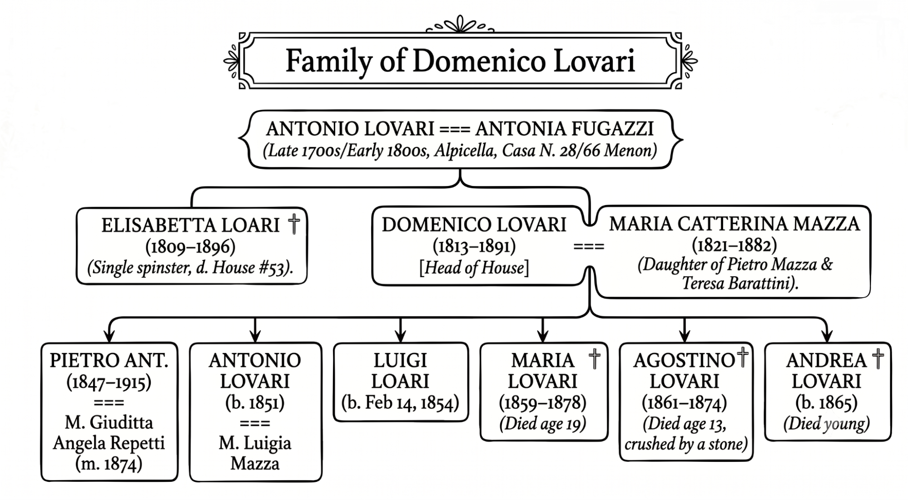
Life inside Domenico’s household was caught between the disruption of Italian unification and everyday tragedy:
La vita all'interno della famiglia di Domenico fu travolta dai disagi dell'unificazione italiana e da tragedie quotidiane:
- Pietro Antonio Lovari (Domenico's eldest son): Got drafted or signed up for the newly minted Italian army, likely seeing action in the late 1860s or early 1870s during the final, bloody chapters of Il Risorgimento (Italian unification).
- Pietro Antonio Lovari (figlio maggiore di Domenico): Fu arruolato o si unì al neonato esercito italiano, vedendo probabilmente l'azione alla fine degli anni 1860 o all'inizio degli anni 1870 durante i capitoli finali e sanguinosi del Risorgimento (l'unificazione italiana).
- The Tragedy of 1874: In 1874, Domenico’s 13-year-old son, Agostino, was fatally crushed by a stone at the Villa Neri Mill just outside Alpicella.
- La tragedia del 1874: Nel 1874, il figlio tredicenne di Domenico, Agostino, fu schiacciato a morte da una pietra al mulino di Villa Neri, appena fuori Alpicella.
- Pietro’s Marriage: Just three weeks after burying his little brother, the eldest son, Pietro, married Maria Giuditta Angela Repetti.
- Il matrimonio di Pietro: Solo tre settimane dopo aver sepolto il fratellino, il figlio maggiore, Pietro, sposò Maria Giuditta Angela Repetti.
Two years after Agostino was killed, with economic prospects looking grim, the third son, Luigi, decided he’d had enough. At just 23 years old, he walked away from Alpicella to try his luck in New York City.
Due anni dopo l'uccisione di Agostino, con prospettive economiche grigie, il terzo figlio, Luigi, decise che ne aveva abbastanza. A soli 23 anni, lasciò Alpicella per tentare la fortuna a New York.
The 1876 Voyage of the France Il Viaggio del 1876 della France
On October 26, 1876, the transatlantic steamship France dropped anchor in New York Harbor, fresh from Le Havre. Luigi’s crossing was a textbook case of "chain migration"—essentially a traveling village of local families, neighbors, and young tradesmen sticking together to cross the Atlantic.
Il 26 ottobre 1876, il piroscafo transatlantico France gettò l'ancora nel porto di New York, fresco di partenza da Le Havre. La traversata di Luigi fu un caso da manuale di "migrazione a catena"—in pratica un intero villaggio itinerante di famiglie locali, vicini e giovani artigiani che si univano per attraversare l'Atlantico.
The ship's handwritten manifest gives you a raw look at the journey:
Il manifesto scritto a mano della nave offre uno sguardo crudo sul viaggio:
- The Clerical Mutation: The voyage kicked off in France, so a French port clerk took down the names phonetically and completely butchered them. The 23-year-old Luigi officially stepped into America registered as "Louis Loari." This switch from Lovari to Loari was incredibly common for a simple reason: in the local Ligurian dialect, that middle 'v' is completely silent. Here’s a document that details this Lovari vs. Loari confusion.
- La mutazione dell'impiegato: Il viaggio partì dalla Francia, quindi un impiegato portuale francese trascrisse i nomi foneticamente, stravolgendoli completamente. Il ventitreenne Luigi entrò ufficialmente in America registrato come "Louis Loari." Questo passaggio da Lovari a Loari era incredibilmente comune per un semplice motivo: nel dialetto ligure locale, quella 'v' intermedia è completamente muta. Ecco un documento che descrive in dettaglio questa confusione tra Lovari e Loari.
- The Fugazzi Connection: Traveling right alongside Luigi were two 18-year-old boys, Fidele and Antoine Fugazzi—almost certainly his first cousins via his grandmother, Antonia Fugazzi. While the teenagers were written down as simple farmers, Luigi was logged as a mason. He’d already put in his time and finished his apprenticeship; he was the seasoned tradesman anchoring the trio.
- Il legame con i Fugazzi: A viaggiare proprio accanto a Luigi c'erano due ragazzi di 18 anni, Fidele e Antoine Fugazzi—quasi certamente suoi cugini di primo grado da parte della nonna, Antonia Fugazzi. Mentre i due adolescenti erano registrati come semplici contadini, Luigi era registrato come muratore. Aveva già fatto la sua gavetta e finito l'apprendistato; era l'artigiano esperto che faceva da ancora al trio.
- Life in Steerage: They traveled in 4e classe (Fourth Class Steerage), meaning it was cramped, loud, and dirty. Looking at the manifest, they were surrounded by familiar names and faces from the Val d’Aveto, including Pietro Spinetto (a 63-year-old master carpenter), Giuseppe Solari (a 40-year-old merchant), and the Segalini clan.
- La vita in stiva: Viaggiavano in 4e classe (quarta classe), il che significava che lo spazio era stretto, rumoroso e sporco. Guardando il manifesto, erano circondati da nomi e volti familiari della Val d'Aveto, tra cui Pietro Spinetto (un maestro carpentiere di 63 anni), Giuseppe Solari (un mercante di 40 anni) e il clan dei Segalini.
Settling New York’s South Village
Stabilirsi nel South Village di New York
After clearing the bureaucratic gauntlet at the Castle Garden immigration depot, Luigi went straight for the dense, chaotic Italian enclave of Manhattan's South Village, packing himself into a tenement flat on Thompson Street.
Dopo aver superato la trafila burocratica del deposito immigrazione di Castle Garden, Luigi si diresse dritto verso la fitta e caotica enclave italiana del South Village di Manhattan, sistemandosi in un appartamento all'interno di un palazzo di ringhiera su Thompson Street.
Luigi arrived during New York’s great infrastructure rush. They were right in the middle of building the IRT Sixth Avenue Line—the elevated "El" train. From 1876 to 1878, that project needed every single stone and brick mason it could get its hands on to drop the heavy foundation piers into the city dirt. It was immediate, back-breaking work for Ligurian immigrants who knew how to handle stone.
Luigi arrivò durante la grande corsa alle infrastrutture di New York. Erano nel bel mezzo della costruzione della IRT Sixth Avenue Line—la ferrovia sopraelevata denominata "El". Dal 1876 al 1878, quel progetto ebbe bisogno di ogni singolo muratore e scalpellino specializzato su cui potesse mettere le mani per posare i pesanti pilastri di fondazione nel terreno della città. Fu un lavoro immediato e spossante per gli immigrati liguri che sapevano come lavorare la pietra.
Surviving this urban jungle required connections, and they found them in Luigi V. Fugazzi. He was a legendary padrone (labor broker, banker, and neighborhood boss) from the exact same Santo Stefano d'Aveto region, and he was almost certainly a cousin. Fugazzi is a fascinating character—he fought alongside Giuseppe Garibaldi, got knighted by the King of Italy, and ran a political network connected straight into Tammany Hall. He’s like a one-man bridge between Old Italy and the gritty, wild-west politics of Gangs of New York. Fugazzi lined up the jobs, handled the money, and kept the pipeline open for families moving from Liguria to Greenwich Village.
Sopravvivere in questa giungla urbana richiedeva contatti, e loro li trovarono in Luigi V. Fugazzi. Era un leggendario padrone (intermediario del lavoro, banchiere e capo di quartiere) proveniente dalla stessa identica regione di Santo Stefano d'Aveto, ed era quasi certamente un cugino. Fugazzi è un personaggio affascinante—combatté al fianco di Giuseppe Garibaldi, fu nominato cavaliere dal Re d'Italia e gestì una rete politica collegata direttamente alla Tammany Hall. È come un ponte vivente tra la Vecchia Italia e la politica cruda e selvaggia di Gangs of New York. Fugazzi procurava i lavori, gestiva i soldi e manteneva aperto il canale per le famiglie che si spostavano dalla Liguria al Greenwich Village.
By 1880, Luigi had his feet under him, marrying Adelaide Lagorio in the South Village, who was from Mezzanego—a village just down the mountains from Santo Stefano, a little closer to the coast.
Nel 1880 Luigi aveva ormai trovato la sua stabilità, sposando nel South Village Adelaide Lagorio, che proveniva da Mezzanego—un paesino appena sotto le montagne rispetto a Santo Stefano, un po' più vicino alla costa.
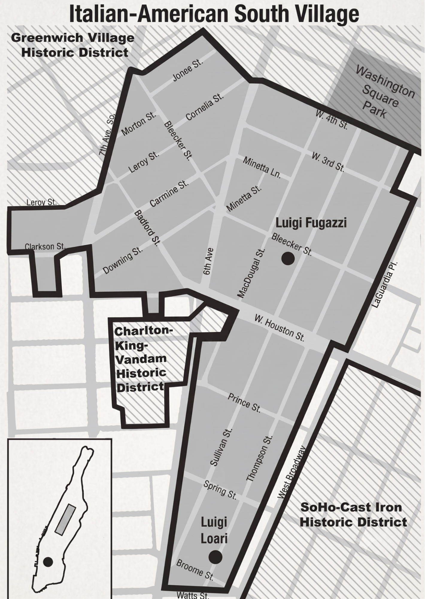
A Family Divided: The Two Branches
Una Famiglia Divisa: I Due Rami
From that point on, the family line cuts down two entirely different paths: the ones who stayed rooted in Italy, and the ones quickly becoming American.
Da quel momento in poi, la linea familiare si divise in due percorsi completamente diversi: quelli che rimasero legati all'Italia e quelli che diventarono rapidamente americani.
1. The Line of Pietro Lovari (Italy & New York)
1. Il Ramo di Pietro Lovari (Italia e New York)
Back home in Alpicella, Luigi’s older brother, Pietro, stayed behind and raised three kids: Domenico Agostino, Maria Catterina, and Maria Clotilde Domenica. In 1883, Pietro took his daughters across the Atlantic to join the New York South Village scene. Maria Catterina married John Biasotti, while Maria Clotilde married Luigi Bartolomeo Fugazzi, both staying in New York to start families.
A casa ad Alpicella, il fratello maggiore di Luigi, Pietro, rimase lì e crebbe tre figli: Domenico Agostino, Maria Catterina e Maria Clotilde Domenica. Nel 1883, Pietro portò le sue figlie oltreoceano per unirsi alla realtà del South Village di New York. Maria Catterina sposò John Biasotti, mentre Maria Clotilde sposò Luigi Bartolomeo Fugazzi, ed entrambi i rami rimasero a New York per mettere su famiglia.
Pietro eventually returned to Italy. In 1910, he took one last trip across the ocean to see his daughters, listing his son, Domenico Agostino, as his contact back in Alpicella. Pietro returned home and died in Alpicella, and his son Domenico Agostino seems to have never left the valley. Today, Pietro’s bloodline lives on in America through his daughters (the Biasotti and Fugazzi families), while his son's line is still living in Alpicella.
Pietro alla fine tornò in Italia. Nel 1910 fece un ultimo viaggio oltreoceano per trovare le figlie, indicando suo figlio, Domenico Agostino, come suo contatto ad Alpicella. Pietro ritornò a casa e morì ad Alpicella, e suo figlio Domenico Agostino sembra non aver mai lasciato la valle. Oggi la stirpe di Pietro vive ancora in America attraverso le sue figlie (le famiglie Biasotti e Fugazzi), mentre la linea di suo figlio risiede tuttora ad Alpicella.
2. The Line of Luigi Loari (New York to Chicago)
2. Il Ramo di Luigi Loari (Da New York a Chicago)
Luigi and Adelaide raised two boys in the New York tenements: Giovanni Luigi and Pietro Domenico. After Luigi died young, Adelaide remarried and took the family westward to Chicago. Out in the Midwest, the two brothers permanently locked in the American version of the name:
Luigi e Adelaide crebbero due figli nei casermoni di New York: Giovanni Luigi e Pietro Domenico. Dopo la morte prematura di Luigi, Adelaide si risposò e portò la famiglia a ovest, verso Chicago. Nel Midwest, i due fratelli impressero per sempre la versione americana del nome:
- Both brothers wound up marrying Irish immigrant women: Giovanni married Honor Cahill and Pietro married Alice Lester.
- Entrambi i fratelli finirono per sposare donne immigrate irlandesi: Giovanni sposò Honor Cahill e Pietro sposò Alice Lester.
- They slapped an "e" onto the tail end of the surname for good, completely anglicizing who they were to become John Louis Loarie and Peter Thomas Loarie.
- Aggiunsero per sempre una "e" alla fine del cognome, anglicizzando completamente la loro identità per diventare John Louis Loarie e Peter Thomas Loarie.
Today, every single person walking around with the last name Loarie traces their line directly to Peter Thomas and John Louis. I come from John Louis Loarie who was my father's grandfather. And for me, the downsides of having to say "rhymes with glory" every time someone tries to take on this impossible name with every vowel except u is more than offset by knowing the history of this name that was adapted from the place of wolves in Santo Stefano to the Irish-Italian neighborhoods of Chicago.
Oggi, ogni singola persona che va in giro con il cognome Loarie traccia la propria linea direttamente da Peter Thomas e John Louis. Io discendo da John Louis Loarie, che era il nonno di mio padre. E per me, il fastidio di dover dire 'fa rima con glory' ogni volta che qualcuno prova ad affrontare questo nome impossibile — che contiene ogni vocale tranne la u — è ampiamente ripagato dal conoscere la storia di questo nome, che si è adattato dalle terre dei lupi di Santo Stefano fino ai quartieri italo-irlandesi di Chicago.
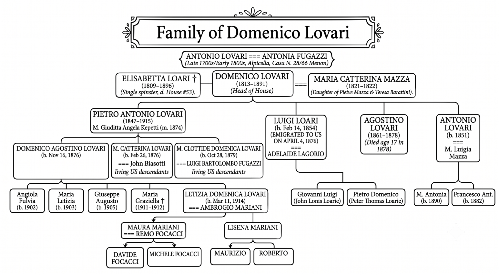
Future Work
Ricerche Future
Even with all these pieces in place, there are still a few loose ends I haven't been able to tie down. I still don't know if Domenico’s son, Antonio Lovari, left a line of descendants out there. There is a completely separate branch of Lovaris in the States tracing back to an Antonio Lovari who married a Luigia Mazza, but because they were born much earlier—in the 1830s instead of the 1850s—they look like a parallel family line rather than ours.
Nonostante tutti questi tasselli siano al loro posto, ci sono ancora alcune questioni in sospeso che non sono riuscito a chiarire. Non so ancora se il figlio di Domenico, Antonio Lovari, abbia lasciato una discendenza. Negli Stati Uniti esiste un ramo di Lovari completamente separato che risale a un Antonio Lovari sposato con una Luigia Mazza, ma poiché sono nati molto prima—negli anni 1830 anziché 1850—sembrano appartenere a una linea familiare parallela piuttosto che alla nostra.
On top of that, besides Domenico Agostino Lovari’s family still in Alpicella (like Davide Focacci and his family), I’ve been trading messages with two other separate Lovari families—one in Alpicella and one over in Amborzasco. I’d love to plug them into our main tree, but doing that means we’re going to have to crack open church records from the Napoleonic era older than Antonio Lovari and Antonia Fugazzi to find the common patriarch.
Oltre a ciò, al di là della famiglia di Domenico Agostino Lovari ancora ad Alpicella (come Davide Focacci e i suoi cari), sono rimasto in contatto con altre due famiglie Lovari distinte—una ad Alpicella e una ad Amborzasco. Mi piacerebbe inserirle nel nostro albero principale, ma per farlo dovremo spulciare i registri parrocchiali dell'era napoleonica, antecedenti ad Antonio Lovari e Antonia Fugazzi, per trovare il capostipite comune.
My Visit to the South Village
La Mia Visita al South Village
Last year, I stayed with a friend in the South Village and spent some time exploring Luigi’s neighborhood. I hit the exact block on Thompson Street where Luigi used to live, but time has wiped out any physical trace of that 1870s immigrant hustle. I wanted to check out the Lower East Side Tenement Museum nearby—which I hear is great—but it was closed for the day. In the end, the closest thing to a real, physical link to that era was the big statue of Giuseppe Garibaldi standing out in Washington Square Park, looking over the neighborhood that was once a cramped microcosm of Italy in the middle of New York City.
L'anno scorso ho alloggiato da un amico nel South Village e ho passato un po' di tempo a esplorare il quartiere di Luigi. Sono andato proprio nell'isolato di Thompson Street dove viveva Luigi, ma il tempo ha cancellato ogni traccia fisica di quel fermento migratorio degli anni 1870. Volevo visitare il vicino Lower East Side Tenement Museum—di cui mi hanno parlato benissimo—ma per quel giorno era chiuso. Alla fine, la cosa più vicina a un vero legame fisico con quell'epoca è stata la grande statua di Giuseppe Garibaldi che svetta in Washington Square Park, affacciata su quello che un tempo era un ristretto microcosm o d'Italia nel cuore di New York City.
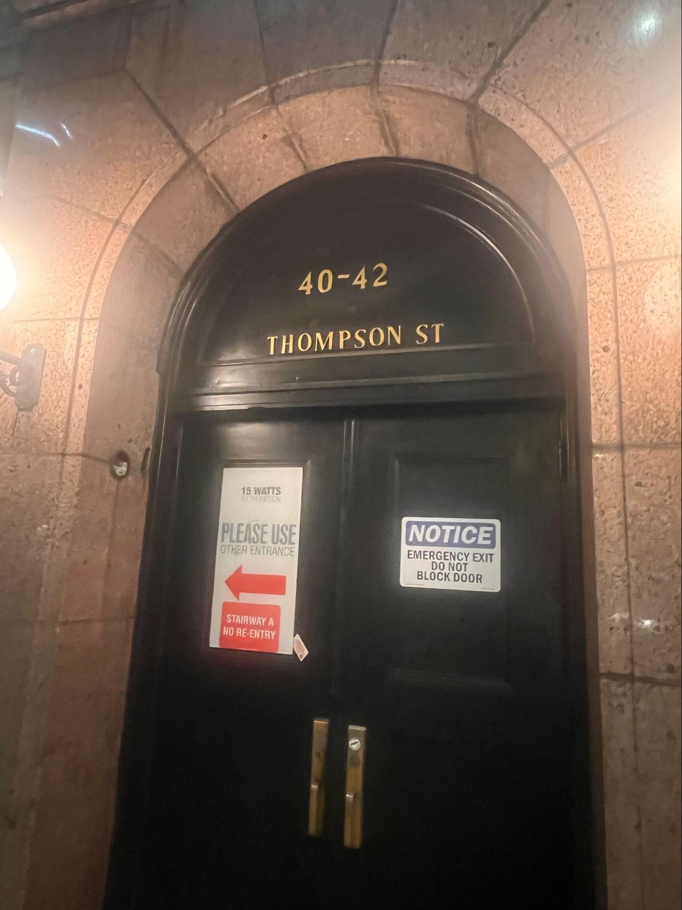
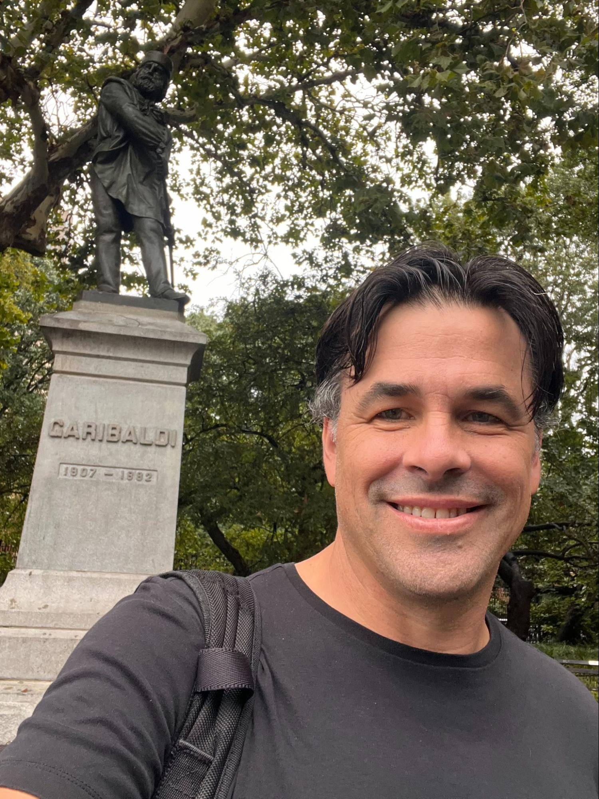
My Visit to Alpicella
La Mia Visita ad Alpicella
Jokes from The White Lotus and Saturday Night Live aside, this summer I actually made the pilgrimage up into Santo Stefano. We drove the winding mountain roads up from Chiavari on the coast, making our first stop at Rezzoaglio. I wanted to see the Nuovo Liquorificio Fabbrizii distillery—it’s run by a local Fugazzi family—but sadly it had closed down two years ago. I managed to find a bottle of their amaro at a small nearby grocery store before we pushed on to the actual village of Lovari.
Ironie a parte su The White Lotus e Saturday Night Live, quest'estate ho fatto davvero il pellegrinaggio fino a Santo Stefano. Abbiamo percorso le tortuose strade di montagna salendo da Chiavari sulla costa, facendo la nostra prima sosta a Rezzoaglio. Volevo visitare la distilleria Nuovo Liquorificio Fabbrizii—gestita da una famiglia Fugazzi locale—ma purtroppo aveva chiuso i battenti due anni fa. Sono riuscito a scovare una bottiglia del loro amaro in un piccolo alimentari lì vicino, prima di proseguire verso il vero e proprio villaggio di Lovari.
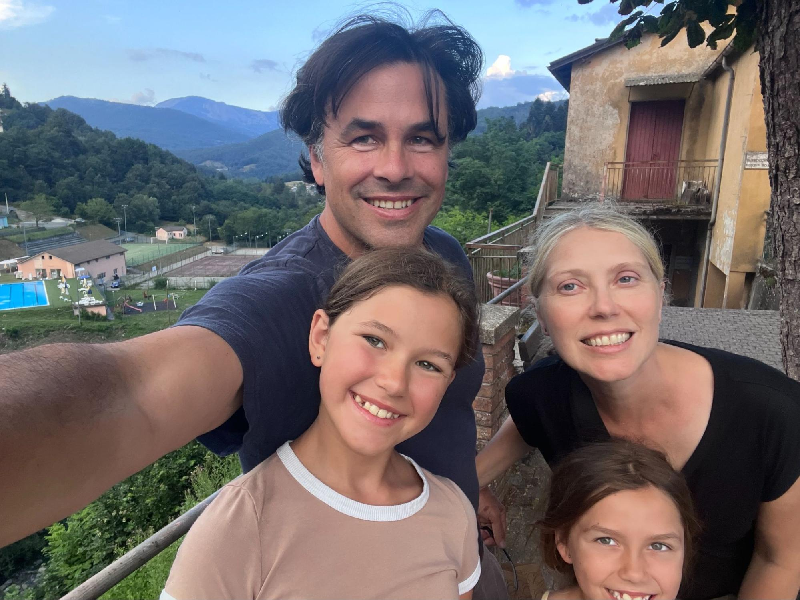
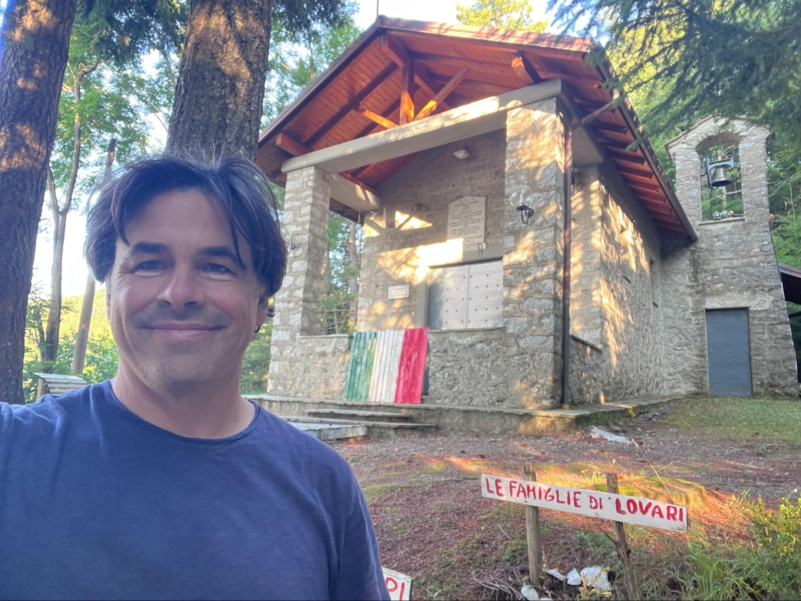
The next day, right by the old stone walls of Malaspina Castle in the center of Santo Stefano d’Aveto, I met up with Fabio Lovari. He works for the Rezzoaglio Municipality and lives in Alpicella. His family is one of those parallel Lovari lines I can’t quite hook into our tree without going back another generation.
Il giorno dopo, proprio accanto alle antiche mura di pietra del Castello Malaspina, nel centro di Santo Stefano d'Aveto, ho incontrato Fabio Lovari. Lavora per il Comune di Rezzoaglio e vive ad Alpicella. La sua famiglia appartiene a una di quelle linee Lovari parallele che non riesco ancora a collegare al nostro albero senza risalire di un'altra generazione.
Fabio was kind enough to introduce me to Antoniuccia Sbertoli over at the Santo Stefano d’Aveto Municipality. She helped me hunt through the Fogli di Famiglia—the old, handwritten household ledgers—to locate Domenico Lovari's original records. Out of nowhere, she pulled a thread and connected me directly to the living descendants of Luigi’s brother Pietro’s son, Domenico Agostino. They’re still living right there in Alpicella—my actual fourth cousins!
Fabio è stato così gentile da presentarmi ad Antoniuccia Sbertoli del Comune di Santo Stefano d'Aveto. Mi ha aiutato a scartabellare tra i Fogli di Famiglia—i vecchi registri di stato di famiglia scritti a mano—per rintracciare i documenti originali di Domenico Lovari. Dal nulla, ha tirato un filo e mi ha collegato direttamente ai discendenti in vita di Domenico Agostino, figlio di Pietro (il fratello di Luigi). Vivono ancora proprio lì ad Alpicella—i miei veri cugini di quarto grado!
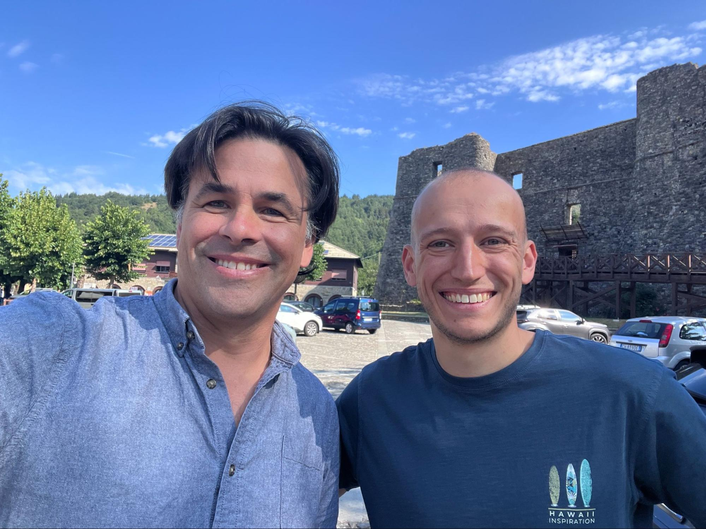
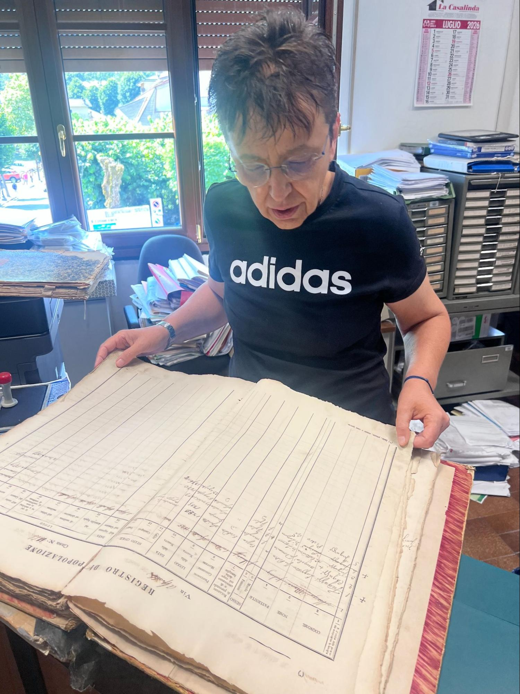
Meeting my fourth cousins—Davide Focacci, Maurizio Mariani, and Maurizio’s son, Lorenzo—standing in the exact town the Lovaris came out of was an amazing experience. First, they showed me the Alpicella cemetery. The old graveyard was abandoned years ago, meaning if you wanted to keep your ancestors, you had to move them into the modern cemetery plots. Davide showed me how tight things got: his great-grandfather, Domenico Agostino Lovari, was actually stacked into the exact same concrete slot as his own son, Giuseppe, because the new graveyard ran out of room.
Incontrare i miei cugini di quarto grado—Davide Focacci, Maurizio Mariani e suo figlio Lorenzo—proprio nel paese da cui provenivano i Lovari è stata un'esperienza incredibile. Per prima cosa mi hanno mostrato il cimitero di Alpicella. Il vecchio camposanto è stato abbandonato anni fa, il che significa che se volevi conservare i tuoi antenati dovevi trasferirli nei loculi del cimitero moderno. Davide mi ha mostrato quanto le cose si fossero fatte strette: suo bisnonno, Domenico Agostino Lovari, è stato letteralmente inserito nello stesso identico loculo di cemento di suo figlio Giuseppe, perché nel nuovo cimitero non c'era più spazio.
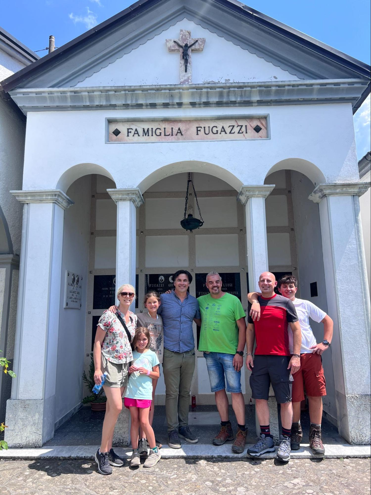
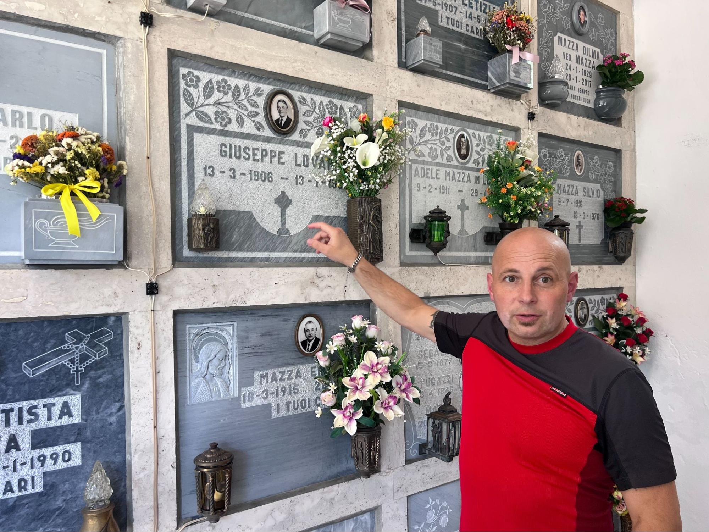
We walked around the village of Alpicella—which has a great Instagram page to give you the flavor of it—and then we explored the old, heavily overgrown historic graveyard where Domenico would have been buried. Davide told me the individual markers were long gone, but the place is still thick with familiar names from the family tree like Fugazzi and Mazza.
Abbiamo fatto un giro per il borgo di Alpicella—che ha un'ottima pagina Instagram per renderne l'atmosfera—e poi abbiamo esplorato il vecchio cimitero storico, completamente sommerso dalla vegetazione, dove Domenico sarebbe stato sepolto. Davide mi ha detto che le singole lapidi sono ormai scomparse, ma il luogo è ancora pieno di nomi familiari del nostro albero genealogico come Fugazzi e Mazza.
Right there in the bushes, I stumbled on one headstone that completely stops you in your tracks. It’s a weathered monument for a husband and wife, and the Italian carved into it says everything you need to know about the immigrant experience:
Proprio lì tra la vegetazione intricata, mi sono imbattuto in una lapide che ti blocca all'istante. È un monumento consumato dal tempo dedicato a due coniugi, e l'italiano scolpito sopra racchiude tutto ciò che c'è da sapere sull'esperienza migratoria:
Questo pio ricordo del suo diletto consorte
Mazza Giovanni fu Michele
morto di 31 anni nel 1883
pose Mazza Caterina
che colla famiglia in terra straniera
provò tutto il peso della vedovanza.
English Translation: "This pious remembrance of her beloved spouse, Giovanni Mazza, son of the late Michele, who died at 31 years of age in 1883, was placed by Caterina Mazza, who, with her family in a foreign land, felt the full weight of widowhood."
Traduzione: "Questo pio ricordo del suo diletto consorte, Giovanni Mazza, fu Michele, morto a 31 anni nel 1883, fu posto da Caterina Mazza che con la famiglia in terra straniera provò tutto il peso della vedovanza."
That phrase right there—in terra straniera (in a foreign land)—is a raw, permanent reminder of how tight the loop is between the mountains of Santo Stefano and the packed tenements of New York's South Village. It carved into stone the heavy, brutal toll migration took on these people—both the ones who got on the boat and the ones who stayed behind.
Quella frase lì—in terra straniera—è un promemoria crudo e permanente di quanto sia stretto il legame tra le montagne di Santo Stefano e i casermoni affollati del South Village di New York. Ha impresso nella pietra il peso enorme e brutale che la migrazione ha imposto a queste persone—sia a quelle che sono salite sulla nave, sia a quelle che sono rimaste indietro.
My cousins Davide and Maurizio are living proof of how fluid that history really was. Their great-great-grandfather Pietro took the massive gamble to go to America, but ultimately decided to come right back to these exact mountains. Standing there with them was a reminder of how small and connected the world is, and how you can reach across so much history in just a few generations.
I miei cugini Davide e Maurizio sono la prova vivente di quanto questa storia sia stata fluida. Il loro trisnonno Pietro tentò il grande azzardo di andare in America, ma alla fine decise di tornare proprio tra queste montagne. Stare lì con loro è stato un promemoria di quanto il mondo sia piccolo e interconnesso, e di come si possa scavalcare così tanta storia in pochissime generazioni.
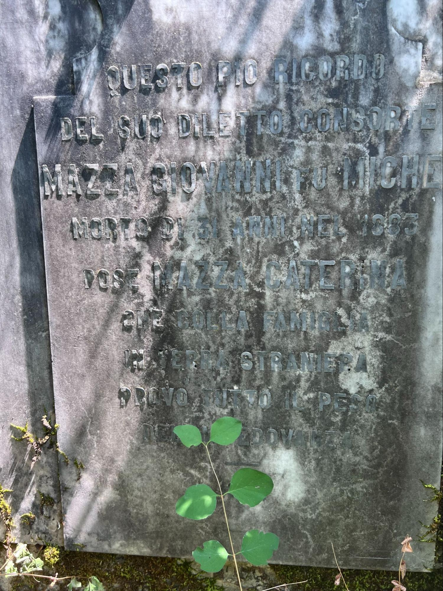